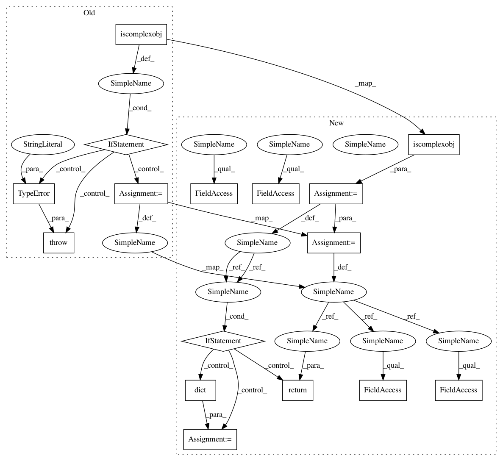

243754abffee934278db17978f284c46b77780df,scipy/ndimage/interpolation.py,,zoom,#Any#Any#Any#Any#Any#Any#Any#,607
Before Change
if order < 0 or order > 5:
raise RuntimeError("spline order not supported")
input = numpy.asarray(input)
if numpy.iscomplexobj(input):
raise TypeError("Complex type not supported")
if input.ndim < 1:
raise RuntimeError("input and output rank must be > 0")
if prefilter and order > 1:
padded, npad = _prepad_for_spline_filter(input, mode, cval)
filtered = spline_filter(padded, order, output=numpy.float64,
mode=mode)
else:
npad = 0
filtered = input
mode = _ni_support._extend_mode_to_code(mode)
zoom = _ni_support._normalize_sequence(zoom, input.ndim)
output_shape = tuple(
[int(round(ii * jj)) for ii, jj in zip(input.shape, zoom)])
zoom_div = numpy.array(output_shape, float) - 1
// Zooming to infinite values is unpredictable, so just choose
// zoom factor 1 instead
zoom = numpy.divide(numpy.array(input.shape) - 1, zoom_div,
out=numpy.ones_like(input.shape, dtype=numpy.float64),
where=zoom_div != 0)
output = _ni_support._get_output(output, input,
shape=output_shape)
zoom = numpy.ascontiguousarray(zoom)
_nd_image.zoom_shift(filtered, zoom, None, output, order, mode, cval, npad)
return output
After Change
zoom = _ni_support._normalize_sequence(zoom, input.ndim)
output_shape = tuple(
[int(round(ii * jj)) for ii, jj in zip(input.shape, zoom)])
complex_output = numpy.iscomplexobj(input)
output = _ni_support._get_output(output, input, shape=output_shape,
complex_output=complex_output)
if complex_output:
// import under different name to avoid confusion with zoom parameter
from scipy.ndimage.interpolation import zoom as _zoom
kwargs = dict(order=order, mode=mode, cval=cval, prefilter=prefilter)
_zoom(input.real, zoom, output=output.real, **kwargs)
_zoom(input.imag, zoom, output=output.imag, **kwargs)
return output
if prefilter and order > 1:
padded, npad = _prepad_for_spline_filter(input, mode, cval)
filtered = spline_filter(padded, order, output=numpy.float64,
mode=mode)
In pattern: SUPERPATTERN
Frequency: 5
Non-data size: 16
Instances
Project Name: scipy/scipy
Commit Name: 243754abffee934278db17978f284c46b77780df
Time: 2020-11-12
Author: grlee77@gmail.com
File Name: scipy/ndimage/interpolation.py
Class Name:
Method Name: zoom
Project Name: scipy/scipy
Commit Name: 243754abffee934278db17978f284c46b77780df
Time: 2020-11-12
Author: grlee77@gmail.com
File Name: scipy/ndimage/interpolation.py
Class Name:
Method Name: affine_transform
Project Name: scipy/scipy
Commit Name: 243754abffee934278db17978f284c46b77780df
Time: 2020-11-12
Author: grlee77@gmail.com
File Name: scipy/ndimage/interpolation.py
Class Name:
Method Name: shift
Project Name: scipy/scipy
Commit Name: 243754abffee934278db17978f284c46b77780df
Time: 2020-11-12
Author: grlee77@gmail.com
File Name: scipy/ndimage/interpolation.py
Class Name:
Method Name: zoom
Project Name: scipy/scipy
Commit Name: 243754abffee934278db17978f284c46b77780df
Time: 2020-11-12
Author: grlee77@gmail.com
File Name: scipy/ndimage/interpolation.py
Class Name:
Method Name: geometric_transform
Project Name: scipy/scipy
Commit Name: 243754abffee934278db17978f284c46b77780df
Time: 2020-11-12
Author: grlee77@gmail.com
File Name: scipy/ndimage/interpolation.py
Class Name:
Method Name: map_coordinates